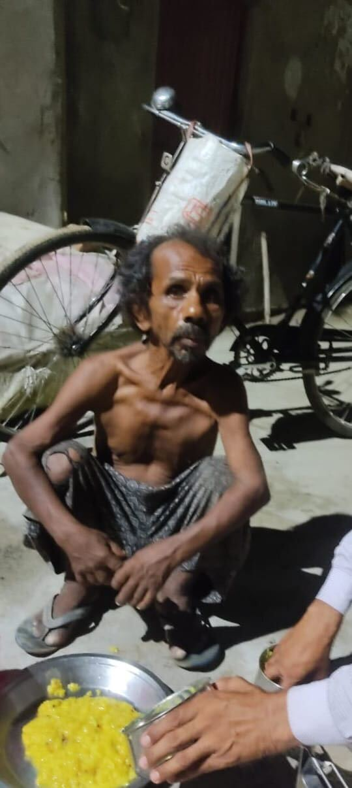
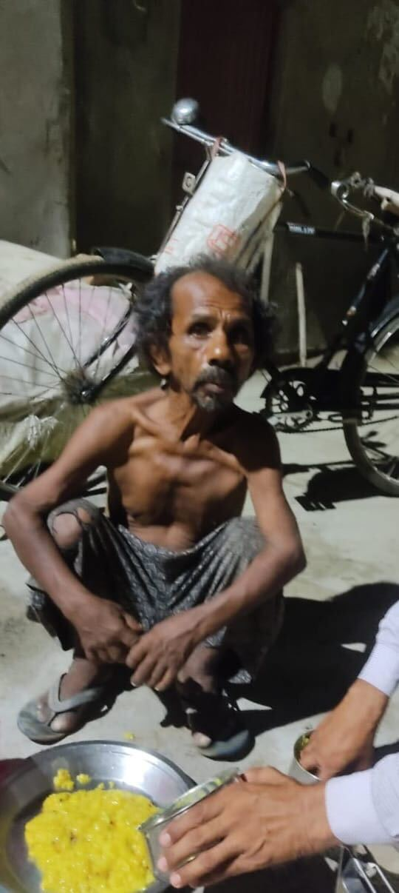
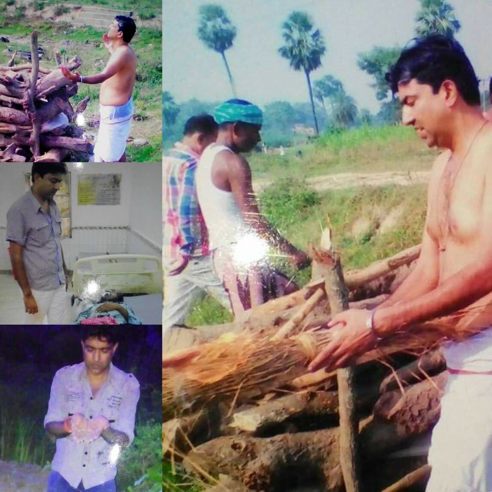
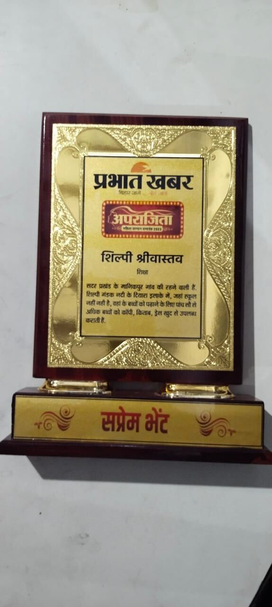
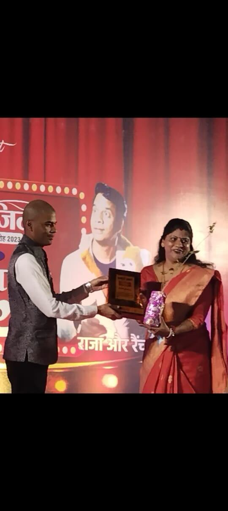
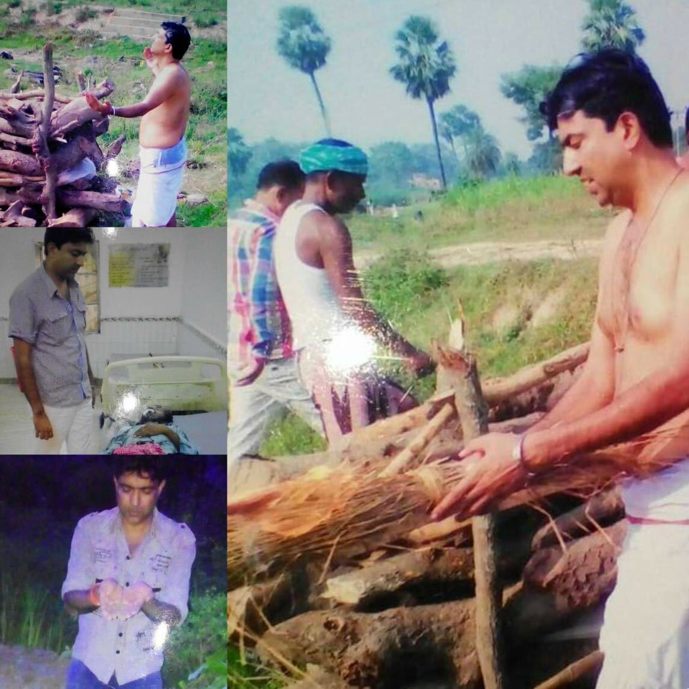
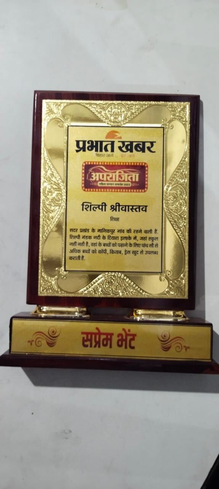
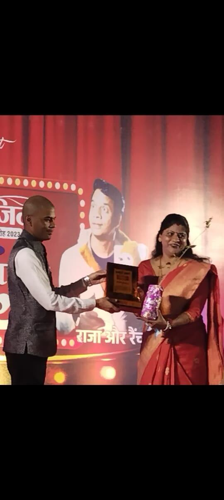

Our Journey Timeline
2011
Established as Shatakshi Educational & Welfare Trust.2019
Mission Hathiyaar Se Kalam Tak launched.2020
Shatakshi Helpline and Jal Pathshala initiatives.2021
Annapurna Rasoi meal service started.2022
Antim Vidai performed 900+ last rites.Founder
Naveen Srivastava transforms pain into purpose.2011
Established as Shatakshi Educational & Welfare Trust.2019
Mission Hathiyaar Se Kalam Tak launched.

 


 




